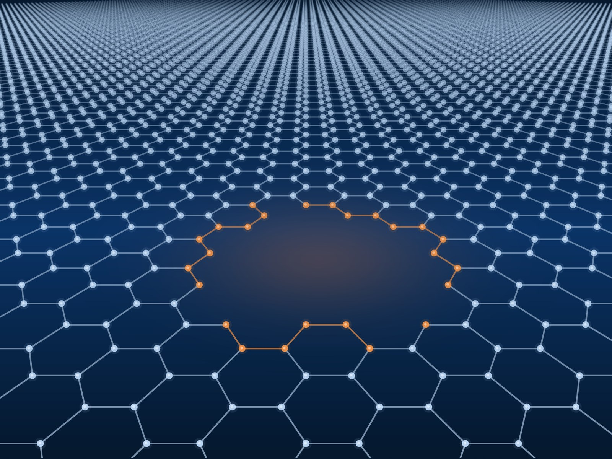

Summer research · Auburn University
Model matter,
atom to bulk.
A paid 10-week research experience in computational modeling of materials and molecules — for undergraduates who want to do this and don't have the chance at home.
May 17 – July 31, 2027 $6,365 stipend Housing + meals + travel No programming experience required

The short version
Ten students. Ten weeks. Real computational research.
Every summer, ten undergraduates come to Auburn to spend ten weeks doing computational research — simulating how matter behaves, from single atoms to bulk materials.
You will not be fetching coffee or reading papers in a corner. You will be running quantum chemistry calculations, molecular dynamics simulations, and machine-learning workflows on some of the largest computers in the Southeast, on a live research problem, with a faculty mentor and a graduate-student mentor who meet with you every week.
The program is hosted by the Center for Multiscale Modeling of Materials and Molecules (CM4) and brings together faculty from Physics, Chemistry and Biochemistry, Materials Engineering, Chemical Engineering, and Statistics.
We especially encourage applications from students at community colleges, primarily undergraduate institutions, and any school where research opportunities are hard to come by.
Why this one
What makes this REU different
You start with a boot camp, not a blank terminal
Week 1 is a hands-on tour of the whole toolkit: AI foundation models for materials, density functional theory, molecular dynamics, finite element analysis, and materials informatics in Python — plus Linux and submitting jobs to a supercomputer. Every faculty mentor teaches a piece of it.
You work in a pair, at two different scales
Two students take one scientific problem from two directions — one running atom-level quantum calculations, the other working at the molecular or continuum scale. You meet with your partner and both mentors every other week to compare what the two views tell you.
You get two mentors
A faculty mentor you meet with at least weekly, and a graduate student in the group as a near-peer mentor for day-to-day tutorials, troubleshooting, and feedback — often more approachable than faculty alone.
Your work doesn't stop in August
The program closes with the CM4 research symposium. After that we support publication — in indexed journals or Auburn's undergraduate research journal — and fund travel for students presenting at conferences.
Applications for Summer 2027
Open [[APPLICATION OPENS]] · Close [[APPLICATION DEADLINE]] · Apply through NSF ETAP